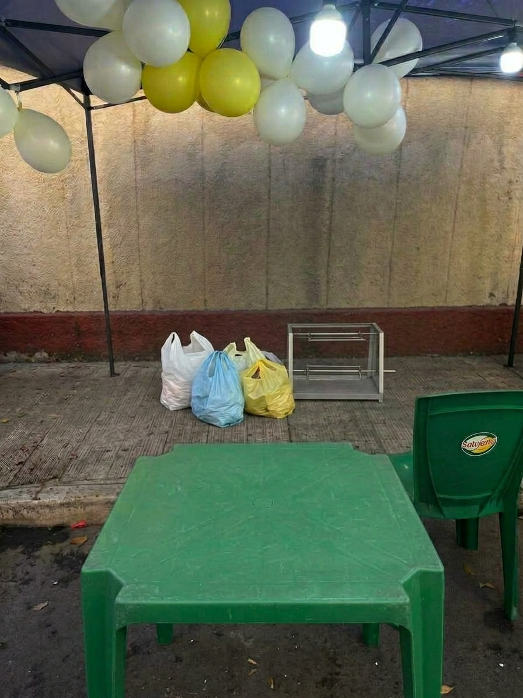
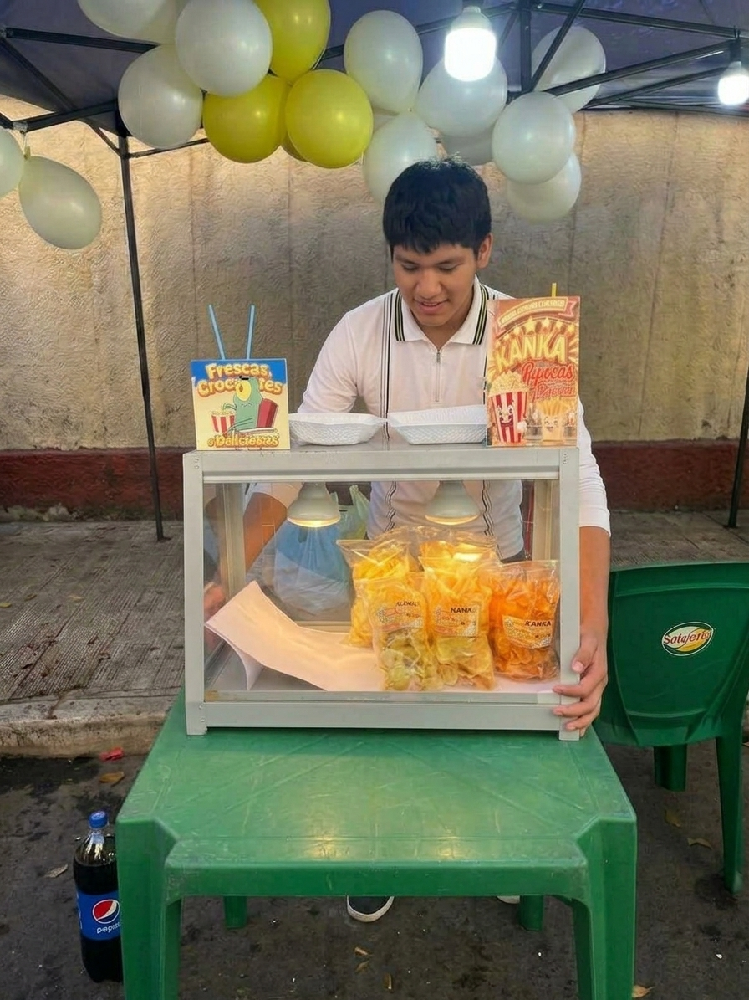
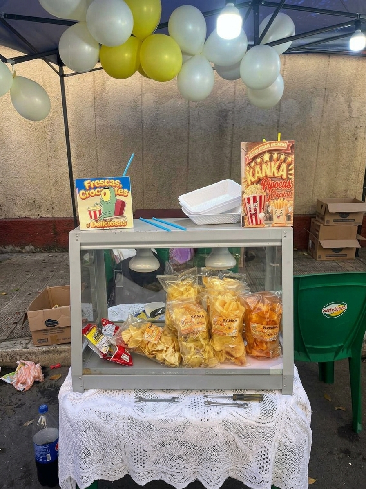

Preparación para la FEXPO ITSEC SUCRE
¿Cómo nos preparamos para la feria?
Para garantizar el éxito en la FEXPO ITSEC SUCRE, nuestro equipo se organizó en varias áreas:
- Producción: Pruebas de cocción para lograr el punto exacto de crocancia en las papas y el sabor ideal en las pipocas.
- Logística: Adquisición de insumos frescos, diseño de empaques ecológicos y cálculo de porciones.
- Marketing: Creación del logo, carteles promocionales y difusión en redes sociales.
Nuestro equipo en acción
A continuación, algunas fotografías de nuestro proceso de preparación, desde la cocina hasta el armado de materiales para la feria:


